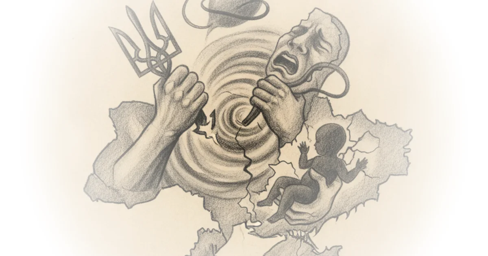

This piece cuts through the geopolitical noise to expose a brutal, intimate weapon of modern warfare: the targeting of family members to break a soldier's will. Tim Mak does not merely report on a kidnapping or a spy ring; he documents a systematic strategy where the Kremlin treats children as leverage and fathers as collateral damage. The story of Mykhailo Puryshev, a volunteer who risked his life to save strangers in Oleshky, only to be forced to travel to Moscow to save his own son, reveals a chilling evolution in Russian security tactics that threatens to destabilize not just Ukraine, but the broader NATO alliance.
The Architecture of Coercion
Mak frames the narrative around the impossible choice faced by Ukrainian defenders, stripping away abstract strategy to focus on the raw human cost. He writes, "The FSB demanded that he either cooperate with them and inform on Ukrainian troops' positions — or watch his own son, who resides in Russia, be forcefully sent to the frontline to fight." This is not a sporadic act of cruelty but a calculated recruitment method. The author details how the Federal Security Service (FSB) has institutionalized the use of relatives living in Russia or occupied territories as pawns.

The article's power lies in its refusal to treat this as an anomaly. Mak notes, "The only thing more shocking than Mykhailo's situation is that this is happening all the time." By anchoring the story in the friendship between Mykhailo and Dzhygit, a veteran who served in the Donetsk region and the Kakhovka Dam rescue efforts, Mak humanizes the statistics. He describes Mykhailo's character through Dzhygit's eyes: "His guardian angel and the Higher Powers — God was with him." Yet, Mak points out that even divine intervention could not fully protect a father when the threat was directed at his child.
"If anyone is going to suffer for him, he will go himself and say, 'Here I am; take me.'"
This quote captures the tragic logic of the coercion. The author argues that the FSB exploits the very virtues of these Ukrainians—their selflessness and protective nature—to turn them into vulnerabilities. While the Ukrainian Ministry of Defense advises contacting police, Mak highlights the impossible calculus: "Carrying out the smallest tasks even under duress will still be considered treason during wartime and lead to criminal charges." Critics might argue that the article places too much moral weight on the victim's decision to travel to Moscow, potentially blurring the lines of agency. However, Mak's reporting suggests that when a child's life is the bargaining chip, the concept of "voluntary" cooperation dissolves entirely.
A Systematic Campaign Beyond Borders
The commentary shifts from individual tragedy to institutional threat, warning that this tactic is expanding beyond Ukraine's borders. Mak writes, "Intelligence officials warned earlier this year of Russia's Wagner Group targeting vulnerable people in Europe to recruit them for acts of sabotage meant to create chaos in NATO countries." This elevates the story from a humanitarian crisis to a national security imperative for the West. The article cites alarming data: "In 2025, 120 minors contacted police about attempts by the Russian security services to recruit them, and about 60 other minors cooperated with the FSB and were subsequently charged."
Mak underscores the vulnerability of specific demographics, noting that "Military personnel and their families are especially vulnerable to these schemes, along with internally displaced persons and young people." The author connects this to the broader context of Russian penal military units and the use of false promises, where recruits are told they are on "secret missions" for their country. The narrative suggests that the executive branch and Western intelligence agencies must recognize this not as a localized conflict tactic, but as a hybrid warfare strategy designed to erode trust and sow chaos from the inside.
The piece also touches on the broader geopolitical friction, mentioning how the Black Sea has become increasingly dangerous for commercial vessels and how Moscow has threatened to bomb UK military bases. These details, while secondary to the main story, serve to illustrate an environment where escalation is the norm and diplomatic channels are fraying. The author implies that the administration's focus on traditional military aid may be insufficient if the enemy is actively dismantling the morale of the population through family-based blackmail.
"There are people who criticize him, but they haven't been in his position."
This line serves as a powerful rebuttal to any judgment of Mykhailo's actions. Mak effectively argues that the moral clarity of wartime is often obscured by the complexity of human relationships. The article suggests that the FSB's strategy is designed specifically to create this moral ambiguity, forcing individuals into corners where traditional rules of engagement do not apply.
Bottom Line
Tim Mak's reporting delivers a stark verdict: the war in Ukraine has evolved into a conflict where the battlefield extends into the family home, and the most effective weapon is not a missile, but a threat against a child. The strongest part of this argument is its ability to illustrate the systemic nature of these blackmail schemes, moving beyond a single story to reveal a pattern that threatens to destabilize the entire region. The biggest vulnerability for Western policymakers is the potential failure to recognize the severity of this psychological warfare, treating it as a secondary issue rather than a primary front. Readers must watch for how the administration and NATO allies adapt their security protocols to protect not just soldiers, but the families they leave behind.